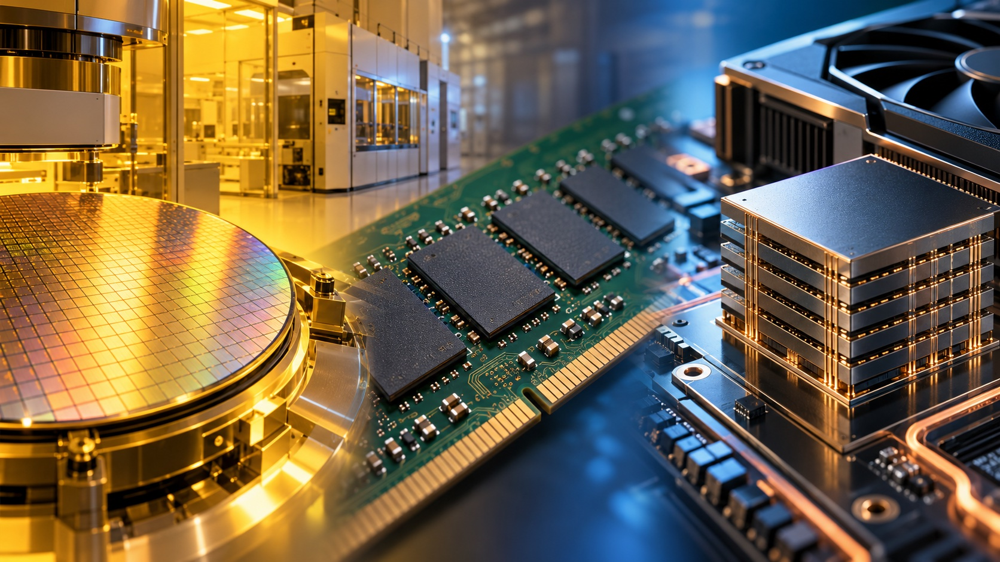

Selecione um capítulo. A imagem ancora a comparação; o texto explica o mecanismo e seus limites.

Ilustrações conceituais geradas por IA. Escalas e estruturas simplificadas; não são desenhos técnicos ou mapas anatômicos.Matéria → estrutura → função
O silício não nasce memória.
A organização de materiais em transistores, capacitores e conexões permite guardar bits. Na DRAM convencional, um capacitor mantém carga e um transistor controla o acesso. A carga precisa de renovação periódica, o refresh.
Limite da comparaçãoCapacidade de RAM não equivale a inteligência. O circuito mantém estados; processadores e software operam sobre esses dados.
Semelhanças funcionais podem ajudar a compreender sistemas com mecanismos físicos distintos.
Conexão e limite
A organização transforma a função.
Silício cristalino, vidro e metal têm propriedades diferentes. Organizados em circuitos ou superfícies, permitem manter estados elétricos ou redirecionar luz.
Até onde vale a analogia? Silício, Si, e sílica, SiO₂, são materiais diferentes. Compartilhar um elemento químico não torna suas propriedades equivalentes.
03 / Distinguir
Quatro sistemas, funções diferentes.
Aspecto
Espelho comum
RAM DRAM
Sistema visual humano
IA de linguagem
Suporte
Vidro e camada refletora metálica
Chips de silício e circuitos
Retina, neurônios e circuitos cerebrais
Processadores, memória e software
Operação
Redirecionar luz presente
Manter estados endereçáveis
Converter e integrar sinais para perceber
Relacionar representações e gerar respostas
Memória
Não grava a cena
Volátil; requer energia e refresh
Percepção interage com atenção e experiência
Parâmetros, contexto e busca externa quando disponível
Limite
Reflexo não é lembrança
Capacidade não é inteligência
Neurônio não equivale a bit
Plausibilidade não garante verdade
Pequeno laboratório
Quanto espaço ocupam os pesos de uma IA?
Altere os parâmetros e os bits. A estimativa é aritmética, não uma especificação de um modelo comercial.
Só os pesos · estimativa ideal14 GB7 bilhões × 2 bytes = 14 GB decimaisO consumo real inclui cache, ativações e outras estruturas. A quantização tem metadados. Isso não mede a memória humana nem o uso total da GPU.
04 / Criar em conjunto
Uma parceria para explorar e testar.
01 · A pessoa dá direção
Define propósito, contexto e critérios. Registra sua primeira hipótese a partir da experiência.
02 · A IA amplia alternativas
Organiza informação, propõe conexões e ajuda a comparar possibilidades. A qualidade depende do contexto e das fontes.
03 · A pessoa verifica
Seleciona, refina e testa. Uma proposta nova ainda precisa ser pertinente e sustentada por evidências.
Como recebemos luz e visualizamos imagens?
Córnea e cristalino focalizam luz na retina. Cones e bastonetes a convertem em alterações celulares; circuitos retinianos processam sinais e células ganglionares enviam impulsos pelo nervo óptico. Na rota principal, sinais passam pelo tálamo e chegam ao córtex visual occipital. A percepção envolve integração entre redes, atenção e experiência.
Como o cérebro processa e lembra por associação?
Neurônios integram sinais excitatórios e inibitórios, geram potenciais de ação e se comunicam por sinapses. A aprendizagem envolve alterações nos circuitos, incluindo a força das conexões. O hipocampo participa da ligação entre elementos de episódios. Uma pista, como um cheiro, pode recuperar relações com lugares, pessoas e emoções; lembrar não é reproduzir um vídeo perfeito.
Como o processamento da IA difere do processamento cerebral?
Num transformer, tokens recebem representações numéricas; camadas aplicam transformações e atenção para relacionar informações. Parâmetros são ajustados no treinamento. Durante a execução, contexto e caches mantêm informação em uso; uma busca pode trazer documentos. Isso não demonstra equivalência com sinapses biológicas nem com experiência subjetiva.
A IA e o ser humano podem criar ideias novas?
Ambos podem produzir combinações novas e úteis. Pensar fora da caixa pode envolver associações remotas, mudança de perspectiva e avaliação. Estudos de tarefas específicas não estabelecem superioridade universal. Mais eletricidade ou memória não garante criatividade melhor; também não há conversão universal validada da memória humana para gigabytes.
Qual é a conexão real entre espelhos e fabricação de RAM?
Na litografia EUV, espelhos multicamada muito precisos operam em vácuo porque materiais de lentes comuns absorveriam essa radiação. Esses instrumentos ajudam a produzir chips avançados. Um espelho doméstico, por sua vez, reflete luz presente e não registra a cena.